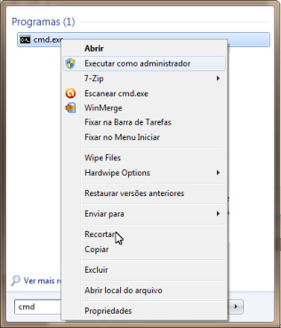

Clique no botão Iniciar do botão Iniciar e pesquise no campo “pesquisar programas e arquivos” pelo nome CMD. Ao achar, clique nele com o botão direito do mouse e escolha a opção "Executar como administrador":
Ao abrir o CMD, agora digite wmic. Depois digite product get name, version (pode ser necessário colocar /value após o name e o version). Observe que aparecerá os produtos e versões instalados na sua estação:
Caso você queira que gere um arquivo de texto, ou um XML, podemos usar /output:nomedoarquivo.txt product get name, version /value ou /output:nomedoarquivo.xml product get name, version /value /format:xml (o arquivo será gerado na pasta onde o CMD está navegando.
Iremos desinstalar o programa Adobe Reader XI. (Última Linha).
Para isso, precisamos digitar o comando product where name="nomedoproduto" call uninstall /nointeractive. No caso, fica assim:
product where name="Adobe Reader XI (11.0.10)" call uninstall /nointeractive
Importante: Para desinstalar o programa, você deve colocar como aparece o nome. No exemplo, observamos que aparece o nome Adobe Reader XI seguido de um espaço e (11.0.10). Já vi casos que colocando só parte do nome não acha o produto e assim, não desinstala. Então, coloque. Logo depois o programa será desinstalado, conforme figura abaixo:
Caso ainda tenha dúvidas se foi desinstalado, poderá dar o comando product get name, version e verificar os produtos instalados.